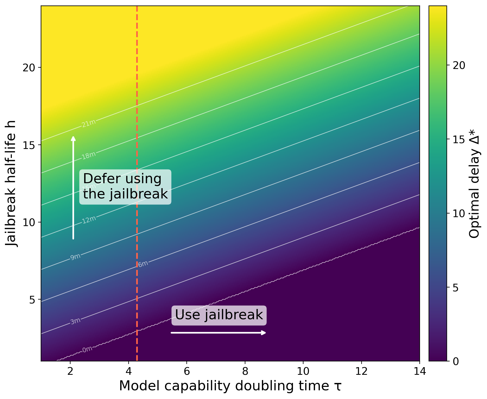

Introduction
Attackers use jailbreaks to bypass safeguards and perform harmful tasks with language models. I use jailbreak to broadly refer to any technique for extracting harmful work from a model, from single-shot prompts to sophisticated scaffolds that split harmful tasks across agents.1Note 1For example, the ARTEMIS paper notes that their scaffolding is "directly responsible for bypassing refusal mechanisms." The Assumptions section below also provides more discussion. Strong jailbreaks are therefore valuable assets to attackers.
Here, I model two considerations attackers face around when to use new jailbreaks. The first concerns the fact that a jailbreak becomes less useful over time, because model safeguards are improving. For example, defenders, researchers, or other attackers may independently discover the same jailbreak, making it more likely to be patched. We should expect that jailbreaks similarly lose value when they are used, because use makes them easier to discover and patch.
The second concerns model capabilities. As models become more capable, they are juicier targets for misuse. For example, the ability to perform cyberattacks with Claude Mythos is clearly more valuable than with GPT-3.5. Therefore, if an attacker discovers a new jailbreak and they think this jailbreak may work on models down-the-line, they might defer using the jailbreak until later, so they can get more useful work out of an agent later without burning their jailbreak now.
So when should an attacker burn the jailbreak, and when should they save it? The following toy model helps make this tradeoff precise.
A simple model of attacker timing
Consider an attacker who has found a strong jailbreak. They face a choice between using the jailbreak now, or saving it for a later, more capable model. Let \(\Delta\) be the time (in months) the attacker waits before using the jailbreak, and let \(T(\Delta)\) be the probability it still works after that delay. The tradeoff depends on two parameters: the jailbreak half-life, \(h\), and the doubling time for model capabilities, \(\tau\).
Suppose that the survival probability of the jailbreak is
which says that the chance the jailbreak remains usable is halved every \(h\) months. A jailbreak might stop working because the provider improves their misuse classifiers, another group discovers it and reports it, or because it fails to transfer to future models. A larger \(h\) means the jailbreak lasts longer. A smaller \(h\) incentivizes the attacker to use the jailbreak before it loses its value.
Next, suppose the utility the attacker obtains from misusing the model grows with model capability. Again, let \(\tau\) be the doubling time in months; for example, METR’s current time-horizon doubling time is roughly 4.3 months. I assume value grows linearly with these doubling intervals. That is, each capability-doubling interval adds an additional unit of misuse value. So, if using the jailbreak today creates 1 unit of value, then using it after one doubling interval creates 2 units, after two intervals creates 3 units, and so on.2Note 2This assumes the misuse value grows linearly with exponentially increasing capability, so after the first doubling, the saved jailbreak is worth twice as much as it would be today, and each additional doubling adds another unit of value, rather than compounding exponentially. This may be wrong in either direction. For example, the misuse value may saturate in some domains, or it may be more convex and grow more than linearly as capabilities increase.
For example, if an attacker can use a jailbreak to get a model to exploit software vulnerabilities for $100 in illicit profit, then after one capability-doubling interval I assume the same jailbreak would enable $200 in illicit profit. Waiting \(\Delta\) months therefore multiplies the value of a working jailbreak by
where \(\tau\) is the model capability doubling time. This term incentivizes the attacker to defer using the jailbreak, to wait for a stronger and more useful model.
Putting these together, the expected value of waiting \(\Delta\) months is
And that's the model. The first term says that the jailbreak is less likely to work over time, and the second term says that the value of using the jailbreak increases as models become more capable. A rational attacker chooses the delay \(\Delta^*\) that maximizes \(U(\Delta)\), so that they maximize the value of their jailbreak.
We can compute the solution for when to optimally use the jailbreak, by differentiating \(U(\Delta)\) with respect to \(\Delta\) and setting the derivative equal to zero:
where I cap at 0 because the attacker cannot wait a negative amount of time. Waiting is more attractive when the jailbreak lasts longer \((h\uparrow)\) and when capabilities improve faster \((\tau\downarrow)\).

Assumptions and implications
This figure shows that, near the METR doubling time, a jailbreak may rationally be held for months or years before it is used. In general, if there are rational attackers, it seems like we may be overestimating the strength of current safeguards. This is because attackers are saving some of their strongest attacks.
I want to highlight two assumptions we make. The first is that there are rational attackers who are strategically withholding their jailbreaks. I think it's reasonably likely that there are some very well-funded groups who are stockpiling jailbreaks, akin to how software exploits are stockpiled, and are waiting to use them (or at least limiting their use) until more capable models are released. This includes attacks with sophisticated agent scaffolds like AI-orchestrated cyber espionage; we have a paper coming out on this class of attacks soon.
Similar logic may also apply to investment in jailbreak discovery. As models grow more capable, attackers will have more confidence that acquiring jailbreaks is worth the cost. This could shift effort towards building and maintaining a portfolio of attacks that remain useful as models improve. This is akin to how security researchers think about zero-day stockpiling, where attackers manage a portfolio of offensive assets based on their expected lifetime, development cost, and the future value of the target.3Note 3For example, see Ablon and Bogart or Wang et al..
A second assumption we make is that defenders strengthen their safeguards after they discover new attacks. This is potentially false for some models. For example, it's been reported that the latest DeepSeek model is vulnerable to some very common jailbreaks. However, this is likely more true for OpenAI/GDM/Anthropic, and I think it will be even more true over time, as model providers take security more seriously.
Acknowledgements: Thanks to Bruce Lee, Berkan Ottlik, and Daniel Paleka for useful conversations and feedback, and GPT-5.5 for helping to simplify my initial model.
Notes
- For example, the ARTEMIS paper notes that their scaffolding is "directly responsible for bypassing refusal mechanisms." The Assumptions section below also provides more discussion. ↩
- This assumes the misuse value grows linearly with exponentially increasing capability, so after the first doubling, the saved jailbreak is worth twice as much as it would be today, and each additional doubling adds another unit of value, rather than compounding exponentially. This may be wrong in either direction. For example, the misuse value may saturate in some domains, or it may be more convex and grow more than linearly as capabilities increase. ↩
- For example, see Ablon and Bogart or Wang et al.. ↩